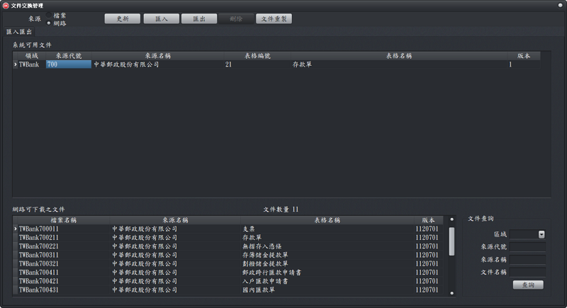

文件交換管理
本軟體在套印任何文件之前，必須建置或取得文件套內容的設定資料(文件輸入介面設定檔)，並指定印表機相關設定(如選擇印表機、設定列印方向、邊界等料)才能進行套印。
- 匯入文件設定檔:有2種方式可以取得您想要的文件設定檔。
- 檔案匯入：
- 將您取得或備份的設定檔匯入管理工具即可。
- 請確認已指定「檔案」後，再點選「匯入」，打開您要匯入的文件設定檔，再點選「開啟」即可
- 網路匯入:
- 專業支援的廠商已提供數百種文件設定檔，可供使用者自行下載使用。
- 請在「來源」點選「網路」選項後，等待3~10秒，系統會從網站下載「文件設定檔」清單供您挑選，請在「網路可下載之文件」點選您想要的文件，再點選「匯入」即可
- 匯入注意事項:
- 匯入檔案會將您現有的文件進行更新，並不會影響本軟體中的資料及記錄。
- 進行印表機相關設定(如指定印表機，設定列印方向、邊界等相關資料)。
- 匯出文件設定檔:
- 將文件檔「匯出」，可以備份文件檔或以供他人匯入使用，免去重新設定的工作。
- 在「inforec」資料夾會出現一個ZIP的壓縮檔，其檔名以領域代號、來源代號、文件編號、文件版本等資料組成檔案名稱，例如臺灣的郵局存款單檔名為「TWBank700211.zip」。
- 自訂文件設定檔：
- 本軟體可由使用者自或專業支援人員，自行新增文件輸入介面設計檔。
- 如果您找不到文件的設定檔，又不想自行設定，請與專業支援人員聯絡，由專業人員協助您完成文件套印相關設計。
- 詳細操作說明請參考本網站「文件輸入介面設計」之說明。

文件交換管理視窗